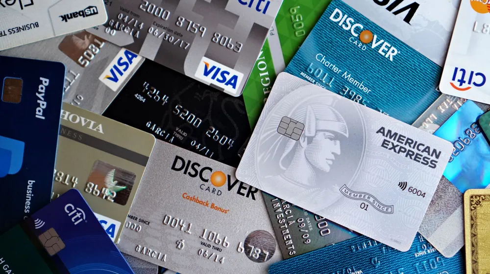

카드론 사용 전 꼭 확인하세요! 놓치면 후회할 3가지 핵심 주의사항
사진: Monstera Production / Pexels (무료 이미지, 출처 표기)
카드론 이용 전 필수 확인! 높은 금리의 진실

카드론은 신용카드 회원을 대상으로 카드사에서 제공하는 장기 신용대출 상품입니다. 간편하게 필요한 자금을 융통할 수 있다는 장점이 있지만, 이용에 앞서 높은 금리에 대한 정확한 이해가 필수적입니다. 2026년 11월 기준, 카드론의 평균 금리는 일반적으로 은행권 신용대출보다 높게 형성되어 있습니다.
카드론 금리가 높은 주된 이유는 담보 없이 개인의 신용을 기반으로 대출이 이루어지기 때문입니다. 금융감독원에 따르면, 카드론의 평균 금리는 고객의 신용등급에 따라 연 5%대에서 최고 19.9%까지 다양하게 분포되어 있습니다. 특히 신용등급이 낮을수록 높은 금리가 적용될 가능성이 크므로, 본인에게 적용될 금리를 미리 확인하고 상환 부담을 신중히 계산해야 합니다.
같은 카드사에서 제공하는 단기 카드대출(현금서비스)과 혼동할 수 있습니다. 현금서비스는 단기 고금리 상품이며, 카드론은 일반적으로 상환 기간이 길고 금리가 현금서비스보다는 낮지만, 여전히 다른 대출 상품 대비 높은 편에 속합니다.
내 신용점수는 안전할까? 카드론이 신용에 미치는 영향
카드론 이용은 신용점수에 직접적인 영향을 미칩니다. 대출 건수 증가, 대출 한도 소진율 상승 등으로 신용점수가 하락할 수 있으며, 이는 향후 다른 금융 거래(주택담보대출, 전세자금대출 등) 시 불리하게 작용할 수 있습니다.
특히 카드론을 과도하게 이용하거나 여러 건을 동시에 사용할 경우, 또는 연체 이력이 발생하면 신용점수 하락 폭이 더욱 커집니다. 신용평가기관들은 대출 종류, 금액, 상환 이력 등을 종합적으로 판단하기 때문에, 카드론 이용 시에는 신용점수 관리에 각별히 신경 써야 합니다.
따라서 카드론을 받기 전에는 반드시 본인의 신용점수를 확인하고, 대출 후 신용점수에 미칠 영향을 고려해야 합니다. 신용점수 조회는 마이데이터 서비스나 신용평가사를 통해 무료로 가능하며, 조회만으로는 신용점수에 영향을 주지 않습니다.
현명한 상환 전략: 중도 상환과 연체 피하는 법
카드론 이용 후에는 체계적인 상환 계획을 세우는 것이 중요합니다. 주로 만기 일시 상환과 원리금 균등 상환 방식이 있는데, 만기 일시 상환은 매달 이자만 내다가 만기 시점에 원금을 한꺼번에 갚는 방식이며, 원리금 균등 상환은 원금과 이자를 매달 같은 금액으로 나누어 갚는 방식입니다.
만기 일시 상환은 당장의 월 상환 부담이 적지만, 만기 시 원금 상환에 대한 부담이 큽니다. 반면 원리금 균등 상환은 매달 꾸준히 원금이 줄어들어 총 이자 부담을 낮출 수 있습니다. 본인의 소득 흐름과 재정 상황에 맞춰 유리한 상환 방식을 선택해야 합니다.
또한 여유 자금이 생겼을 때는 중도 상환을 적극적으로 고려해볼 필요가 있습니다. 중도 상환은 총 이자 부담을 크게 줄일 수 있는 효과적인 방법입니다. 다만, 일부 카드론 상품에는 중도 상환 수수료가 부과될 수 있으므로, 대출 전 약관을 통해 수수료 유무와 요율을 반드시 확인해야 합니다.
대출 연체는 신용점수에 치명적인 영향을 미칠 뿐만 아니라, 연체 가산금리 발생으로 상환 부담이 더욱 가중됩니다. 잦은 연체는 금융기관과의 신뢰 관계를 해치고 향후 금융 서비스 이용에 큰 제약을 줄 수 있으므로, 절대로 연체하지 않도록 주의해야 합니다.
카드론 상품 비교 체크리스트: 나에게 유리한 조건 찾기
다양한 카드사의 카드론 상품 중에서 나에게 가장 적합한 것을 선택하려면, 여러 조건을 꼼꼼히 비교해야 합니다. 아래 체크리스트를 참고하여 자신에게 유리한 상품을 찾아보세요.
- 금리: 가장 낮은 금리를 제시하는 곳을 우선적으로 고려합니다. 주거래 카드사의 우대금리 여부도 확인하세요.
- 한도: 필요한 금액만큼 대출이 가능한지 확인합니다. 너무 높은 한도는 불필요한 지출로 이어질 수 있습니다.
- 상환 방식: 원리금 균등 상환과 만기 일시 상환 중 본인의 소득 흐름에 맞는 방식을 선택합니다.
- 중도 상환 수수료: 만약 대출금을 일찍 갚을 계획이 있다면, 중도 상환 수수료 유무와 요율을 반드시 확인해야 합니다.
- 대출 기간: 상환 기간이 너무 길면 총 이자 부담이 커지고, 너무 짧으면 월 상환 부담이 커질 수 있습니다.
정확한 정보는 각 카드사 공식 홈페이지나 콜센터를 통해 2026년 11월 기준 최신 정보를 확인하시길 권장합니다.
카드론 말고 다른 대안은 없을까? 현명한 선택 가이드
카드론 이용을 고려하기 전에, 더 유리한 조건의 다른 대안은 없는지 살펴보는 것이 현명합니다. 본인의 신용상태와 재정 상황에 따라 다음과 같은 대안들을 검토해 볼 수 있습니다.
위 대출 상품들의 조건과 금리는 2026년 11월 기준이며, 개인의 신용도 및 소득 수준, 각 금융기관의 정책에 따라 달라질 수 있습니다. 정부 지원 서민대출의 자세한 내용은 서민금융진흥원 등 관련 기관에서 확인하는 것이 가장 정확합니다.
🔗 이 글도 함께 보면 좋아요: 실손보험 갱신 전 놓치면 후회할 5가지 핵심 체크리스트